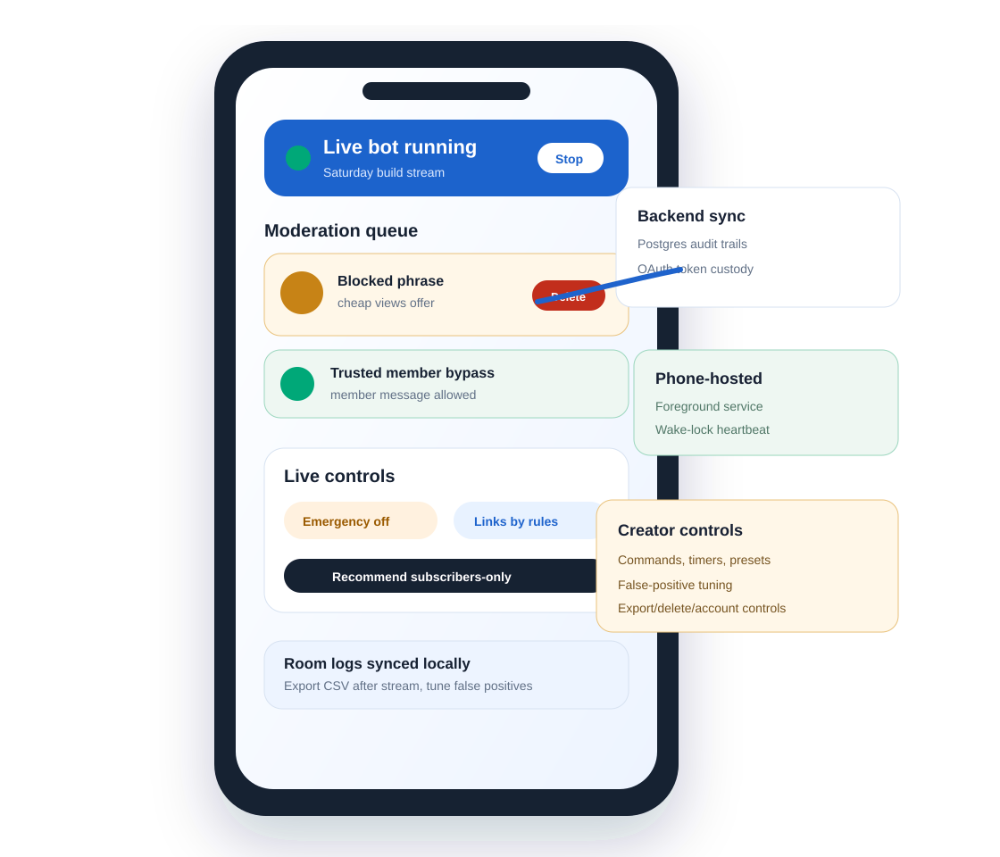

Foreground bot runtime
Runtime context is persisted, recovered after service restarts, and logged with heartbeat, backoff, network, and stream-ended events.

Custom YouTube Live moderation from your phone
Run a creator-owned live chat bot on Android, keep the bot name tied to your YouTube channel, and sync only the account, backup, billing, support, and audit data that belongs on the backend.
Live operations
ChatMod watches YouTube Live chat from a visible foreground service, applies local moderation rules, and gives creators fast controls for stream pressure.
Runtime context is persisted, recovered after service restarts, and logged with heartbeat, backoff, network, and stream-ended events.
Blocked terms, links, repeats, caps, symbols, emoji, raids, warnings, strikes, and false-positive tuning all leave reviewable audit trails.
Commands, timers, presets, link lockdown, emergency mode, and subscriber-only recommendation messages stay reachable during the stream.
Full-stack, not fake-stack
Closed beta path
The first beta stays free-first: sideload/internal builds, free-tier backend hosting, no paid analytics SDK, and no claims that need Play Console or Google OAuth approval before they are verified.